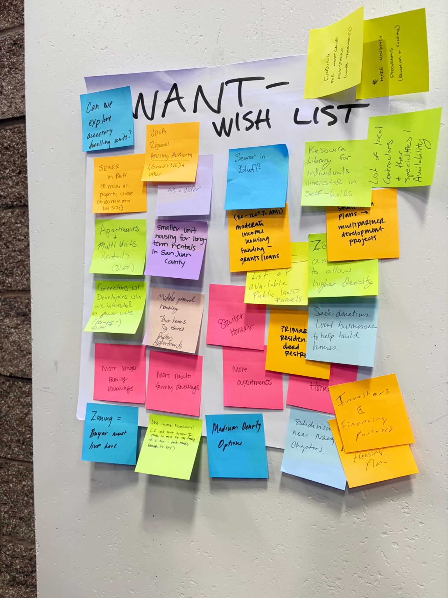
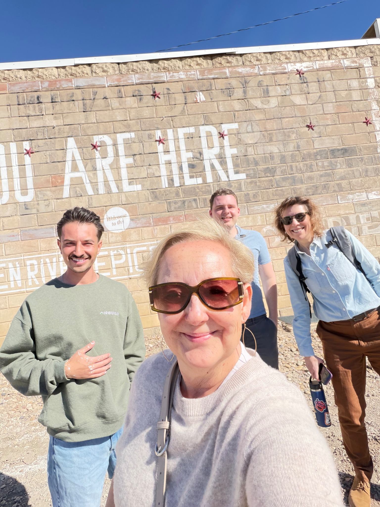
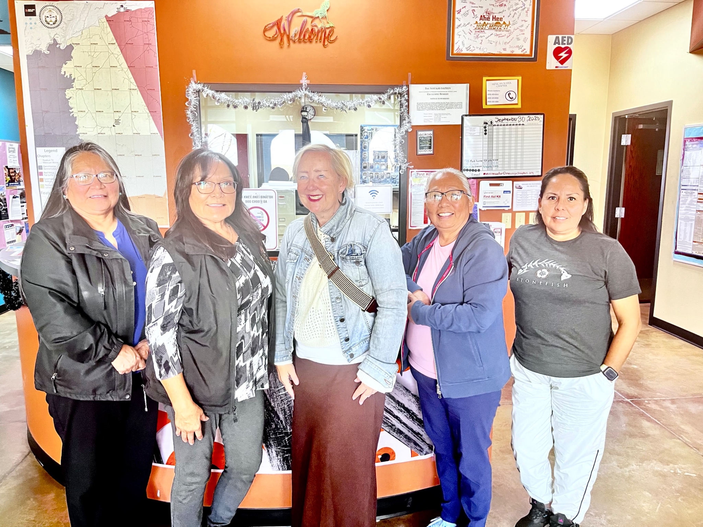
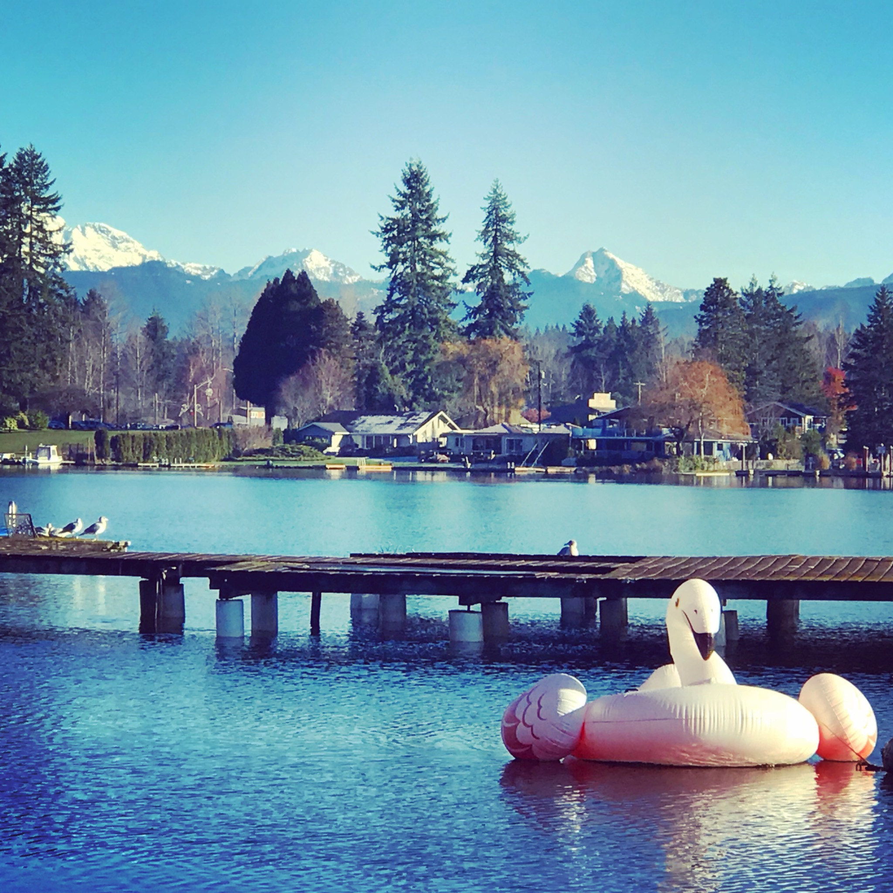
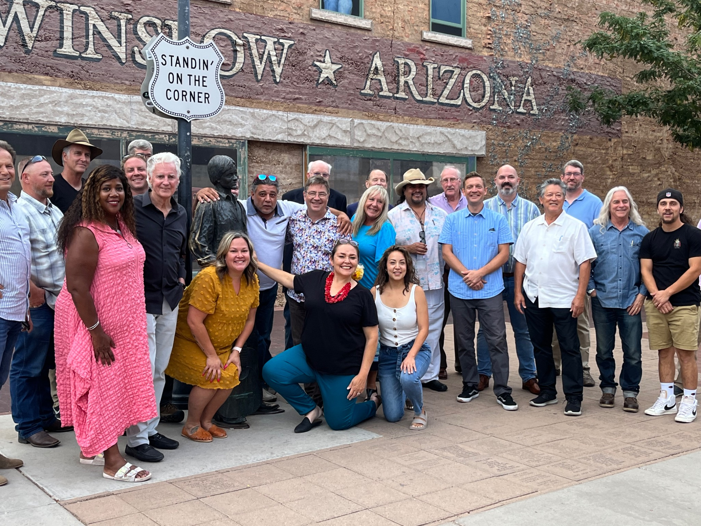
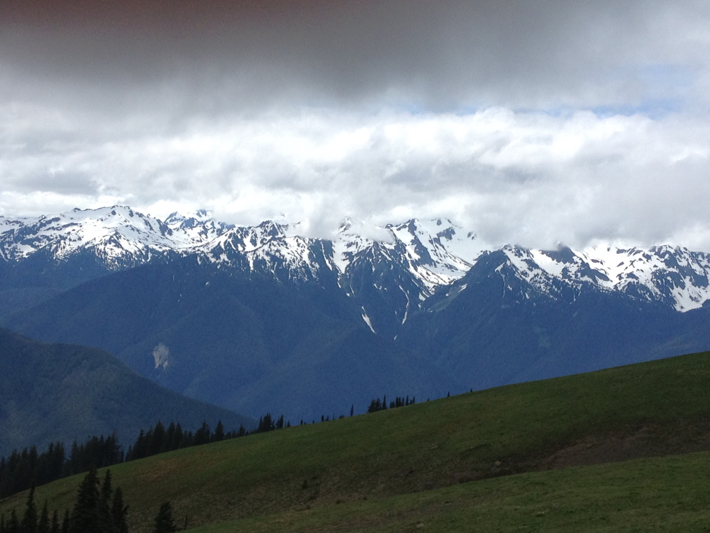

Housing & Community Development
Regional and employer-led approaches that connect housing supply, workforce needs, infrastructure, and long-term community well-being.
Executive advisory · community strategy · regional partnerships
Building the next chapter together.
For more than three decades, I have worked alongside communities, Tribal Nations, nonprofits, healthcare systems, businesses, and governments to turn complex challenges into lasting partnerships and measurable results.
The story behind the work
Wirkebau Consulting works alongside communities, governments, Tribal Nations, nonprofit organizations, and private-sector partners to turn complex challenges into practical pathways for progress.
The work begins by listening, builds through trust, and ends with clear next steps people can own and implement.
Behind every strategy is a conversation



Areas of impact
Regional and employer-led approaches that connect housing supply, workforce needs, infrastructure, and long-term community well-being.
Collaborative structures that bring government, business, nonprofits, funders, and community leaders together around shared outcomes.
Practical strategies that strengthen local economies, attract investment, diversify opportunity, and prepare communities for change.
Culturally conscious partnerships that honor local knowledge, strengthen self-determination, and support resilient community futures.
Connecting priorities, partners, funding, and implementation to advance critical projects with lasting local value.
Responsible destination strategies that strengthen local economies while protecting the places, stories, and character that matter.
Place shapes possibility
“The best strategies do not arrive fully formed. They are built from local knowledge, honest conversation, and shared commitment.”
Communities that drive change
From rural communities and island economies to downtowns and multi-county regions, every engagement is shaped around local priorities, trusted relationships, and practical outcomes.

Washington

Arizona

Pacific Northwest
Utah
The story behind the work
Una Wirkebau is an executive advisor and community strategist whose career spans economic development, housing, tourism, redevelopment, workforce, infrastructure, and public-private partnerships.
Her work has taken her from small rural towns to metropolitan regions and international settings—always grounded in the belief that meaningful change begins with listening.
“Listen first. Build together. Deliver results.”Download Una's CV →
Start a conversation
Let's begin with a conversation.